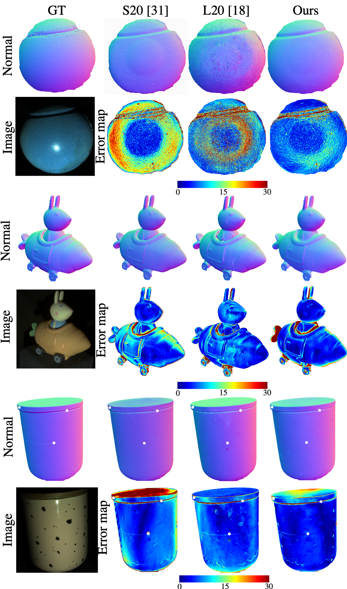

We introduce the first end-to-end learning-based solution to near-field Photometric Stereo (PS), where the light sources are close to the object of interest. This setup is especially useful for reconstructing large immobile objects. Our method is fast, producing a mesh from 52 512×384 resolution images in about 1 second on a commodity GPU, thus potentially unlocking several AR/VR applications. Existing approaches rely on optimization coupled with a far-field PS network operating on pixels or small patches. Using optimization makes these approaches slow and memory intensive (requiring 17GB GPU and 27GB of CPU memory) while using only pixels or patches makes them highly susceptible to noise and calibration errors. To address these issues, we develop a recursive multi-resolution scheme to estimate surface normal and depth maps of the whole image at each step. The predicted depth map at each scale is then used to estimate `per-pixel lighting' for the next scale. This design makes our approach almost 45× faster and 2∘ more accurate (11.3∘ vs. 13.3∘ Mean Angular Error) than the state-of-the-art near-field PS reconstruction technique, which uses iterative optimization.
Result on LUCES
3D results on the LUCES dataset.

Calibrated normal estimation on the LUCES dataset.
Uncalibrated Flashlight Capture
Single Image Face Capture
Our model can be easily modified to work on a single selfie with flash
Code and Model
Our code, trained model, and data will be made publicly available on April 4 !
Acknowledgments
This research is supported by the National Science Foundation under grant no. IIS-1910132.